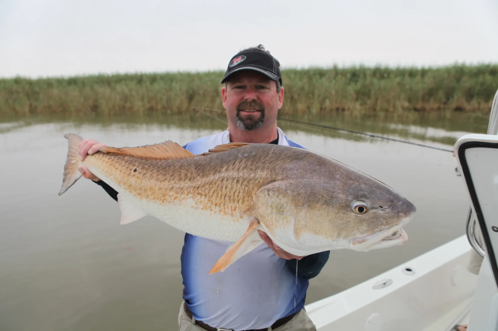
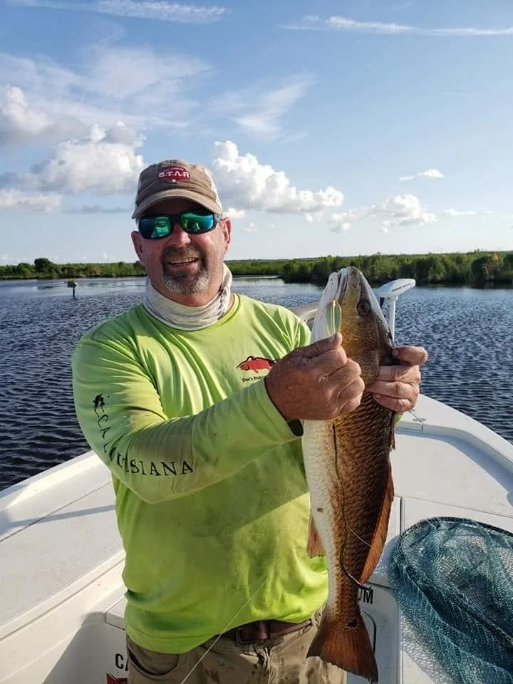
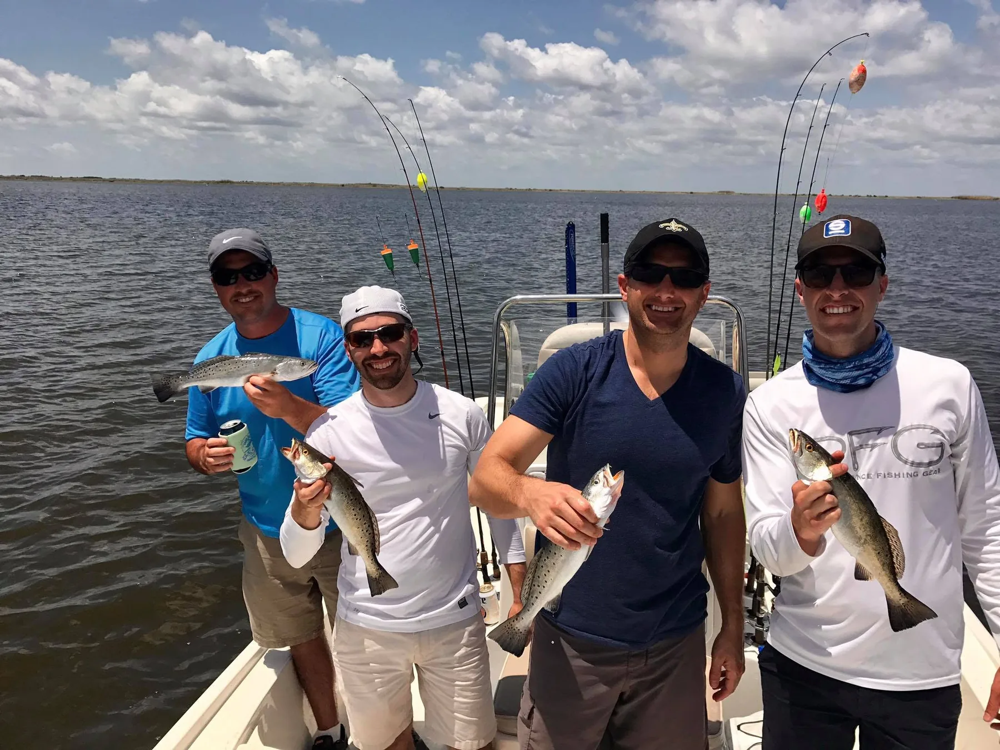
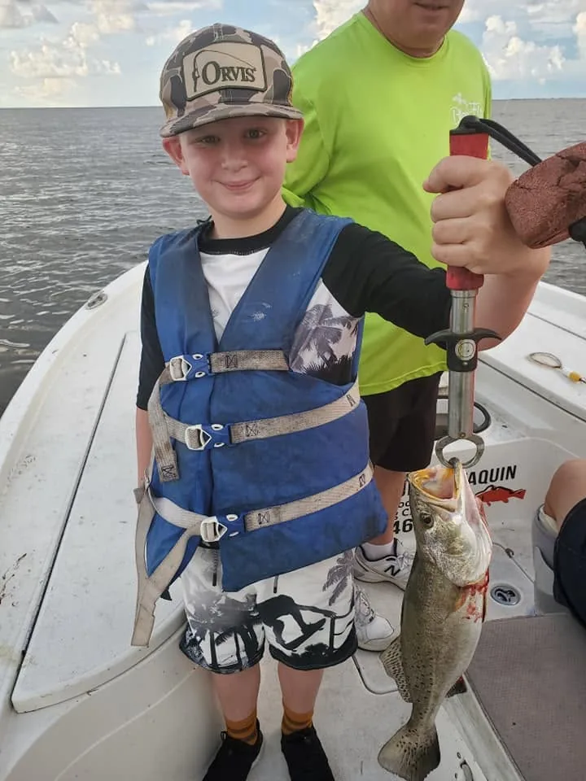
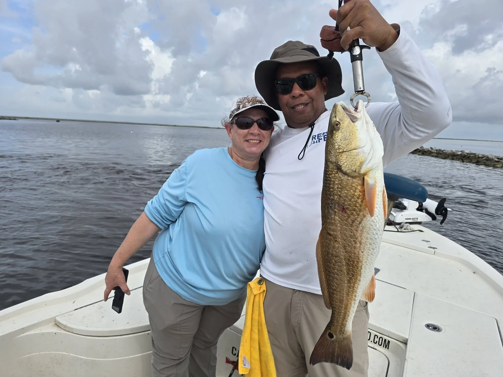
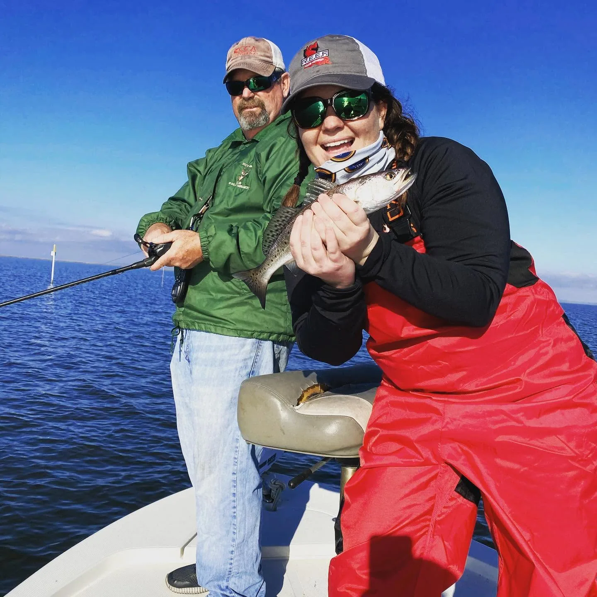
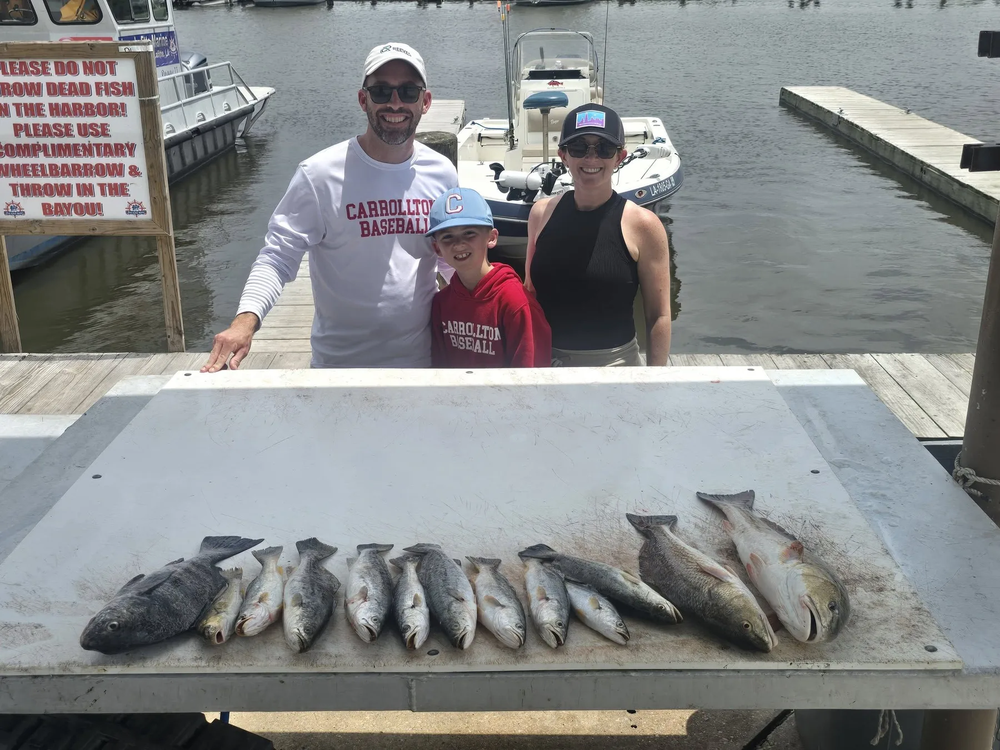
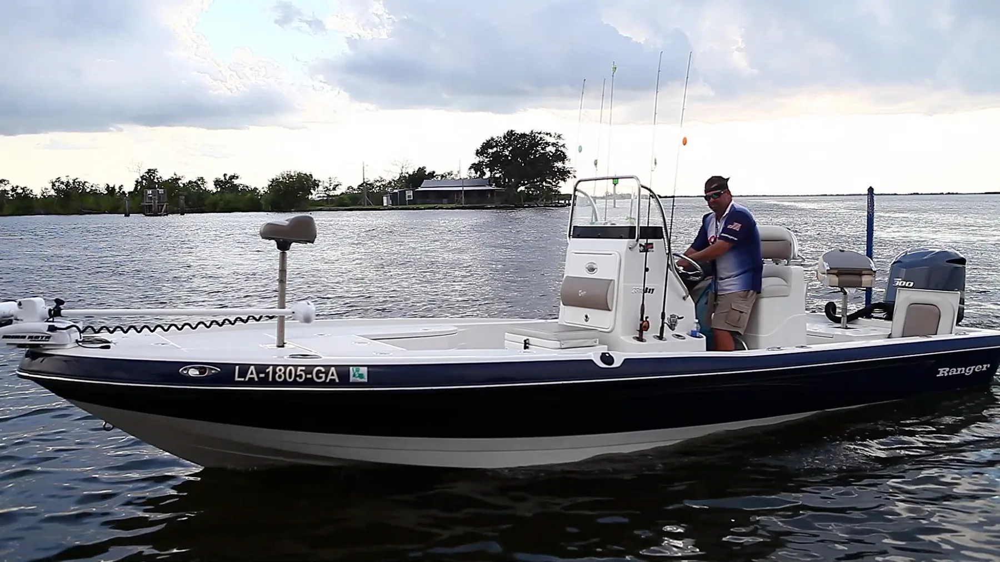

Ranger Bay Boat
The larger Ranger bay boat is the comfortable choice for general coastal fishing, families, and groups. It offers more room, more seating, and the versatility to fish a broad range of Lafitte waters.
Lafitte, Louisiana
Experience Louisiana marsh fishing only about 30 minutes from downtown New Orleans.
Captain Maurice d’Aquin · USCG Licensed & Insured
The Charter
Fish the coastal marshes around Lafitte with Captain Maurice “Doc” d’Aquin. Trips are available for conventional coastal fishing, fly-fishing, and shallow-water sight fishing, with an experience suited to families, first-time anglers, and experienced fishermen.
Additional anglers+$50 each
Cut bait & artificial tackleIncluded


Meet Your Captain
Doc guides anglers through the waters surrounding Lafitte, Louisiana, with the local experience needed to make every trip safe, enjoyable, and productive.
From a child’s first catch to a trophy redfish on fly tackle, Doc welcomes anglers of all experience levels.
The Experience
Families, friends, fly anglers, and first-timers are all welcome aboard.






Fish Lafitte
Launch into Louisiana’s coastal marsh from Lafitte, only about 30 minutes from downtown New Orleans.
Email merdocs@yahoo.com →
Captain's Journal
Captain Doc explains how a shallow-water poling skiff, clean water, manageable wind, and an accurate cast come together for one of Louisiana’s most rewarding fishing experiences.
Read the full storyRecent Catches
Stay Near the Boat
Nearby lodging is available at Jean Lafitte Harbor, the meeting point for many Doc’s Fishing Charters trips. Options may be available for groups of up to four guests.
Ask Captain Doc about lodging when you call to confirm your fishing dates. He can help you coordinate the fishing schedule and point you toward the appropriate lodging contact without sending you through another charter company.
Reserve Your Trip
Call to confirm available dates for your coastal or fly-fishing charter.
Follow the Action
Fresh catches from the marsh
See recent trips, catches, and updates from Captain Maurice on Instagram and Facebook.